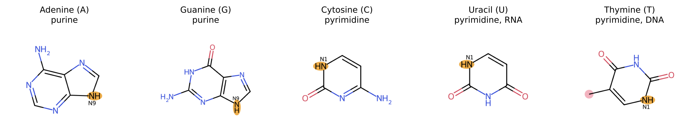
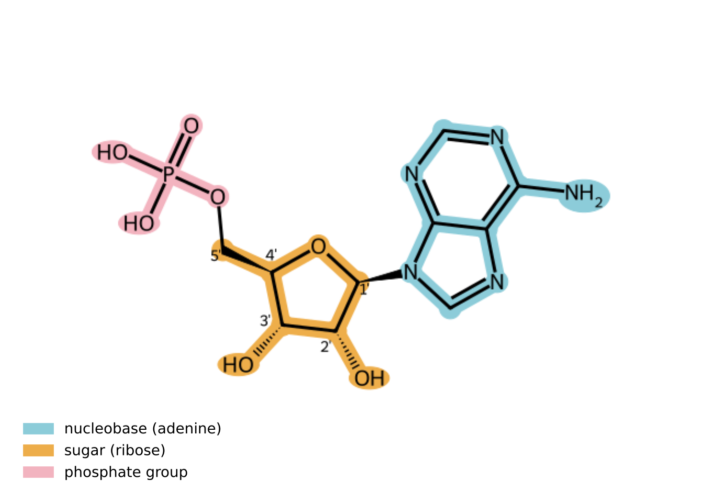
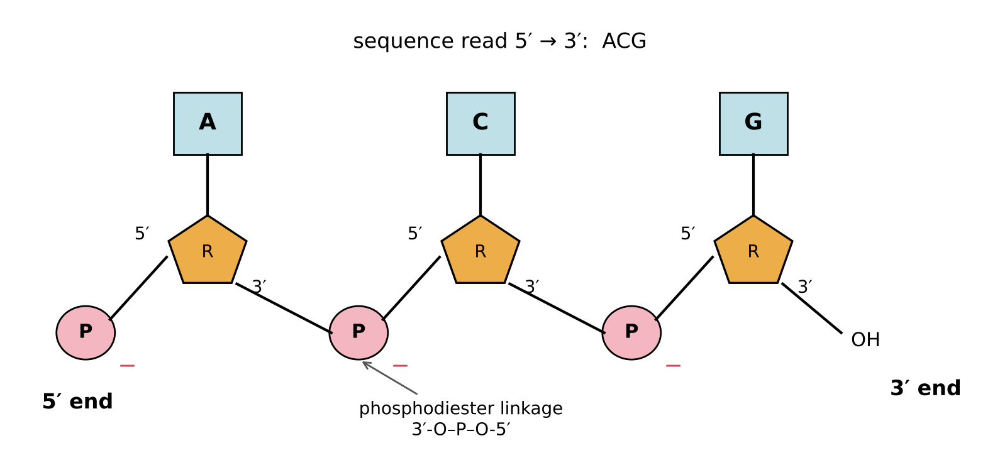
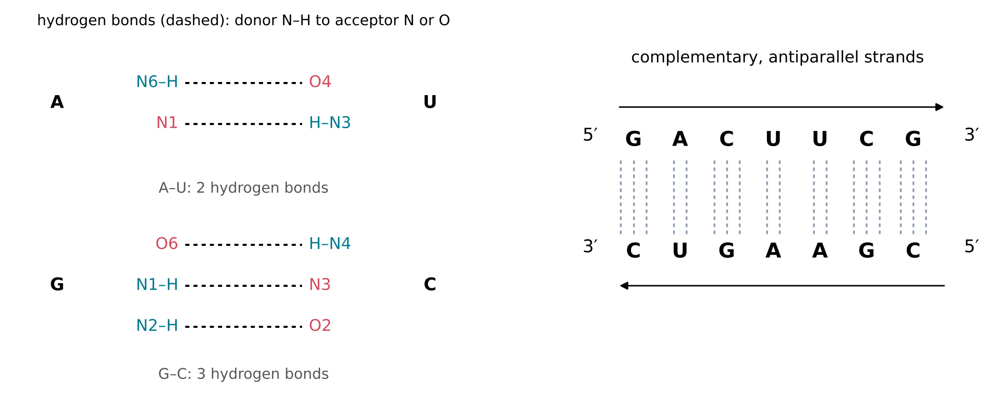
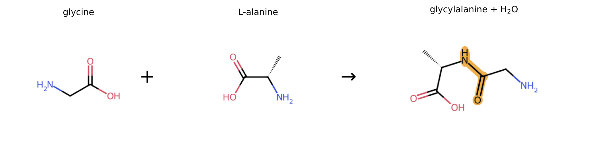

12 The Building Blocks of Life in Miniature
The question of this chapter
The previous chapters introduced atoms and bonds, drawings, water, equilibrium, energy, rates and functional groups. This last chapter puts these tools to work on the molecules at the centre of research into the origins of life. It asks: how are RNA, DNA and proteins built from small parts, and what does their chemistry demand? The answers are short descriptions of the nucleobases, the sugar, the phosphate group and the amino acids, of the bonds that join them, and of the base pairs that allow one chain of RNA or DNA to specify another. At the end, the chapter gathers the chemical questions that any account of the origin of these molecules must answer.
12.1 Polymers and monomers
The large molecules of life are polymers: long chains built from many smaller units, called monomers, joined by covalent bonds. Each monomer, once it is part of the chain, is called a residue. Three families of biological polymers are central:
- Nucleic acids, RNA and DNA, are chains of nucleotides.
- Proteins are chains of amino acids.
- Polysaccharides, such as starch and cellulose, are chains of sugars.
In all three, each new link is formed by a condensation that releases a molecule of water, and broken by hydrolysis (Chapter 7). In water, hydrolysis is generally favoured at equilibrium (Chapters 8 and 9), so in living cells the links are made with the help of activated monomers and catalysts. A short chain of a few units is called an oligomer: an oligonucleotide or, for amino acids, a peptide.
The order of the different kinds of monomer along a chain is its sequence. A polymer made from a few kinds of monomer can be arranged in an enormous number of sequences: with four kinds of nucleotide, a chain of length n can have 4n different sequences, already more than 1060 for n = 100 (Chapter 1). The sequence is what makes a nucleic acid a carrier of information, and what gives each protein its particular shape and function.
12.2 Nucleobases
The nucleobases (or simply bases) are flat, aromatic rings (Chapter 4) of carbon and nitrogen atoms, carrying amino groups and carbonyl groups (Chapter 11). Five are common in nucleic acids (Figure 12.1):
- The purines, adenine (A) and guanine (G), have two fused rings, one of six and one of five atoms.
- The pyrimidines, cytosine (C), uracil (U) and thymine (T), have a single six-membered ring.
RNA contains A, G, C and U; DNA contains A, G, C and T. Thymine differs from uracil only by a methyl group (–CH3) on carbon 5 of the ring.
The atoms of each ring are numbered by a fixed convention. Purines are attached to the sugar through their nitrogen atom N9, and pyrimidines through N1. The other N–H groups, the ring nitrogen atoms with lone pairs, and the C=O groups on the edges of the bases are the donors and acceptors of the hydrogen bonds (Chapter 5) that make base pairing possible (Section 12.5).

12.3 Nucleosides and nucleotides
Base plus sugar
A nucleoside consists of a nucleobase bonded to a sugar. In RNA the sugar is D-ribose in its five-membered ring form (Chapter 11). The bond joins carbon 1\('\) of the sugar to N9 of a purine or N1 of a pyrimidine, and it is formed, at least formally, by a condensation between the base and the hydroxy group on carbon 1\('\) of the sugar. As noted in Chapter 4, the carbon atoms of the sugar are numbered with primes (1\('\) to 5\('\)) to distinguish them from the atoms of the base. In all the nucleosides of RNA, the base is attached in the \(\beta\) arrangement. The four nucleosides of RNA are adenosine, guanosine, cytidine and uridine.
Adding phosphate
A nucleotide is a nucleoside carrying one or more phosphate groups, usually on the hydroxy group of carbon 5\('\), attached as a phosphate ester (Chapter 11). Adenosine with one phosphate is adenosine monophosphate (AMP, Figure 12.2); with a chain of two or three phosphates linked by P–O–P bonds it is adenosine diphosphate (ADP) or adenosine triphosphate (ATP), the activated molecule of Chapter 9. Every nucleotide therefore has three parts: a nucleobase, a sugar and a phosphate group, joined by two bonds that are both formed by condensation.

12.4 Chains of nucleotides
The phosphodiester backbone
In RNA, nucleotides are joined by phosphodiester linkages: a single phosphate group forms an ester with the 3\('\) hydroxy group of one nucleotide and another with the 5\('\) hydroxy group of the next, giving the sequence of bonds 3\('\)-O–P–O-5\('\) (Figure 12.3). Each new link is a condensation between the phosphate of one unit and a hydroxy group of the other. Repeated, these links form a backbone of alternating sugars and phosphates, from which the bases project to the side.
Each phosphodiester linkage keeps one acidic O–H group, which at neutral pH has lost its proton (Chapter 8). The backbone therefore carries one negative charge per nucleotide. This charge keeps RNA dissolved in water, and it repels negatively charged nucleophiles such as the hydroxide ion, which helps to make the phosphodiester linkage resistant to hydrolysis (Westheimer 1987).
Direction
A chain of nucleotides has two different ends. At one end, the 5\('\) position of the first sugar carries a free phosphate or hydroxy group (the 5\('\) end); at the other, the 3\('\) position of the last sugar carries a free hydroxy group (the 3\('\) end). By convention, sequences are written from the 5\('\) end to the 3\('\) end. The sequence 5\('\)-ACG-3\('\) and the sequence 5\('\)-GCA-3\('\) are therefore different molecules, even though they contain the same nucleotides.

12.5 Base pairing
Complementary pairs
The bases on two chains of nucleotides can face each other and form hydrogen bonds between their edges. In 1953, in their model of the structure of DNA, James Watson and Francis Crick proposed that adenine pairs with thymine and guanine with cytosine (Watson and Crick 1953). In RNA, uracil takes the place of thymine. These Watson–Crick base pairs are:
- A–U (or A–T in DNA), held by two hydrogen bonds;
- G–C, held by three hydrogen bonds.
In each pair, a purine faces a pyrimidine, so that both kinds of pair have nearly the same width, and a double helix built from any sequence of them has a regular shape. Figure 12.4 shows which atoms form the hydrogen bonds.

Complementary and antiparallel strands
Two sequences that can form Watson–Crick pairs along their whole length are called complementary. Because of the geometry of the backbone, two paired strands run in opposite directions, one from 5\('\) to 3\('\) and the other from 3\('\) to 5\('\); they are antiparallel. The complement of 5\('\)-GACUUCG-3\('\), read in its own 5\('\) to 3\('\) direction, is therefore 5\('\)-CGAAGUC-3\('\).
Complementarity is the chemical basis of heredity. If the sequence of one strand is known, the sequence of its partner is fixed. A strand can therefore serve as a template: nucleotides line up along it according to the pairing rules and, once joined together, form a complementary copy. Copying the copy regenerates the original sequence. In cells, this process is carried out by enzymes; whether, and how fast, it can happen without enzymes is one of the central questions of research into the origin of life.
The same pairing also occurs within a single strand. A chain of RNA folds back on itself wherever two of its segments are complementary, forming short double-stranded regions separated by loops. In this way a single strand of RNA can adopt a specific three-dimensional shape, determined by its sequence.
12.6 RNA and DNA
RNA and DNA are built on the same plan but differ in three respects:
| RNA | DNA | |
|---|---|---|
| Sugar | ribose, with an OH group on carbon 2\('\) | 2\('\)-deoxyribose, with H in place of the 2\('\) OH |
| Bases | A, G, C, U | A, G, C, T |
| Usual form in cells | mostly single strands, often folded | double helix of two complementary strands |
The 2\('\) hydroxy group has important chemical consequences. It lies next to the phosphodiester linkage, and under basic conditions its oxygen can act as a nucleophile (Chapter 11) and attack the neighbouring phosphorus atom, cutting the chain (Li and Breaker 1999). DNA, which lacks this group, is much more resistant to cleavage, which suits its role as a long-term store of genetic information. The 2\('\) hydroxy group also gives RNA a greater variety of shapes and chemical abilities. Some RNA molecules act as catalysts, the ribozymes of Chapter 10 (Kruger et al. 1982; Guerrier-Takada et al. 1983). Because RNA can both store information in its sequence and catalyse reactions, many researchers consider that an “RNA world”, in which RNA performed both roles, preceded the present system of DNA and proteins (Gilbert 1986).
12.7 Amino acids and proteins
Amino acids
An amino acid, in the sense used in biology, is a molecule in which an amino group and a carboxy group are attached to the same carbon atom, called the \(\alpha\) carbon, which also carries a hydrogen atom and a variable group called the side chain. Twenty kinds of amino acid are commonly found in proteins. They differ only in their side chains, which range from a single hydrogen atom in glycine and a methyl group in alanine to larger groups that are polar, charged or hydrophobic (Chapter 5). As described in Chapter 11, at pH 7 the amino group of a free amino acid is protonated and the carboxy group deprotonated. Except for glycine, whose \(\alpha\) carbon carries two hydrogen atoms, the \(\alpha\) carbon is a stereocentre, and the amino acids of proteins are the L enantiomers (Chapter 11).
Peptide bonds and proteins
Two amino acids join by a condensation between the carboxy group of one and the amino group of the other, releasing water and forming an amide (Chapter 11). In this context the amide bond is called a peptide bond (Figure 12.5). A chain of amino acids joined in this way is a peptide; a long chain folded into a specific shape is a protein. There is no sharp boundary between the two, and chains of more than a few dozen residues are usually called proteins. Like nucleic acids, peptide chains have a direction, from the end with a free amino group (the N-terminus) to the end with a free carboxy group (the C-terminus).
The function of a protein depends on its shape, and its shape on its sequence of side chains, which pack together, with hydrophobic side chains generally buried inside and polar ones on the surface. Enzymes, the catalysts of cells (Chapter 10), are proteins whose shapes bring reacting molecules together and stabilise their transition states.

12.8 The chemistry of the origin of life, in outline
The descriptions in this chapter allow the chemical problems of the origin of life to be stated precisely. Each draws on earlier chapters.
- Making the building blocks. Nucleobases, ribose and amino acids must form from simple molecules such as hydrogen cyanide, formaldehyde, ammonia and water, through additions and other reactions (Chapters 7 and 11), with suitable sources of energy (Chapter 9).
- Selectivity. Ribose is one of many sugars and one of eight stereoisomeric aldopentoses; only D-ribose, in the \(\beta\)-furanose form, is found in RNA (Chapter 11). Reactions that make building blocks usually make many other products too, in amounts set by competing rates (Chapter 10).
- Stability. Many building blocks decompose in water: ribose, for example, has a half-life of hours at 100 °C and of the order of a year near room temperature at neutral pH (Chapter 10). They must be used or protected before they are lost.
- Joining in water. Linking nucleotides into chains, and amino acids into peptides, are condensations, opposed by the large excess of water and by dilution (Chapters 8 and 9). They require removal of water, activated monomers or another supply of Gibbs energy.
- Copying. For sequences to be inherited, chains must serve as templates for complementary copies (Section 12.5), fast and accurately enough to outrun hydrolysis and copying errors.
These are the questions that research into the origins of life seeks to answer, with experiments in the laboratory and with models of the early Earth. Each of them is a question of chemistry, and each can be read with the tools introduced in this book.
Key points
- Nucleic acids, proteins and polysaccharides are polymers formed by condensation of monomers and broken by hydrolysis. The order of monomers is the sequence.
- The nucleobases are the purines adenine and guanine and the pyrimidines cytosine, uracil (RNA) and thymine (DNA).
- A nucleoside is a base bonded through N9 (purines) or N1 (pyrimidines) to carbon 1\('\) of a sugar; a nucleotide is a nucleoside with a phosphate group, usually on carbon 5\('\).
- In RNA, phosphodiester linkages join the 3\('\) position of one nucleotide to the 5\('\) position of the next. The backbone carries one negative charge per nucleotide. Sequences are written from 5\('\) to 3\('\).
- Watson–Crick pairs are A–U (A–T in DNA), with two hydrogen bonds, and G–C, with three. Complementary strands are antiparallel; one strand can act as a template for the other.
- RNA has ribose and uracil; DNA has 2\('\)-deoxyribose and thymine. The 2\('\) hydroxy group makes RNA more easily cleaved and chemically more versatile.
- Amino acids carry an amino group, a carboxy group and a side chain on one carbon; those of proteins are L. Peptide bonds are amides formed by condensation.
- The chemistry of the origin of life involves making the building blocks, selecting the right ones, keeping them intact, joining them in water and copying their sequences.
Self-test
- Name the three parts of a nucleotide and the two bonds that join them. Which of these bonds is formed by a condensation?
- Write the sequence of the strand complementary to 5\('\)-AUGGCA-3\('\), in the 5\('\) to 3\('\) direction. How many hydrogen bonds hold the resulting double helix together (counting only Watson–Crick pairs)?
- How many different RNA sequences of length 10 are possible? Express the answer as a power of 4 and as a power of 10.
- Why is DNA chemically more resistant to cleavage of its backbone than RNA?
- A tripeptide is made from glycine, alanine and glycine. How many water molecules are released when it forms, and how many peptide bonds does it contain?